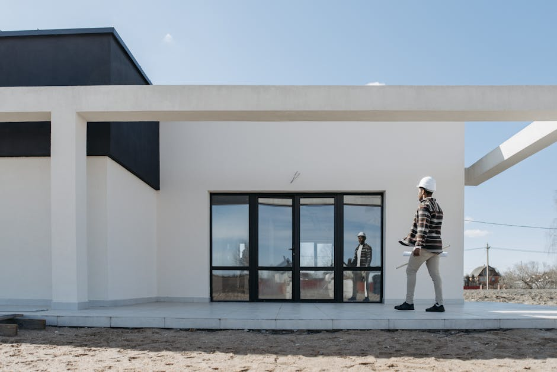
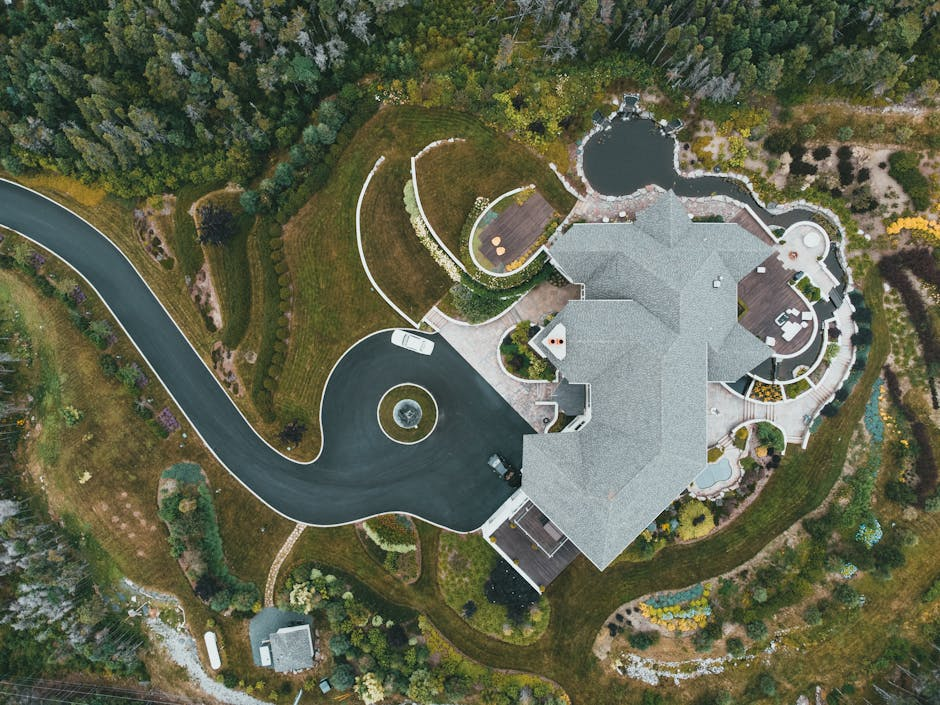
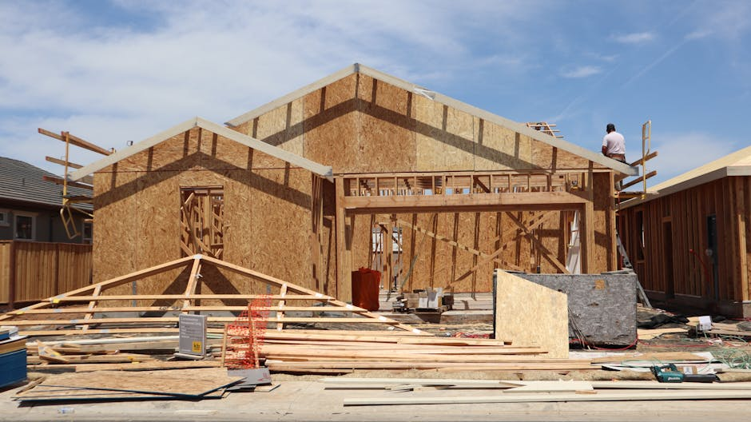

Quick answer: Custom home builders on Sydney’s North Shore operate across Mosman, Cremorne, Lane Cove, Pymble, Wahroonga, Turramurra, Lindfield, and surrounding suburbs. A mid-tier custom build runs $4,200–$5,500/m² for construction in 2026, with all-in costs for a well-specified 400m² home regularly exceeding $3M–$4.5M before land. Most North Shore sites require a Development Application rather than a CDC. A realistic timeline from brief to handover is 24–36 months.
“Custom” in the building industry has become a bit like “artisanal” at the supermarket — it means roughly whatever the person selling it wants it to mean. Some builders will start from your brief, your block, and your constraints and build something genuinely made for you. Others use the word “custom” to describe a project home they’ve relocated a window on. Both groups, it should be said, have very beautiful brochures.
This guide is for people who’d like to know the difference before they hand over a deposit. [Switches to straight face.] Everything from here is practical — what these builds actually cost, how long the DA really takes, what knockdown rebuild actually involves, and when a custom builder is the wrong tool for the job entirely.
- What “custom” actually means on the North Shore
- Which suburbs work for custom builds — and what makes each different
- Knockdown rebuild vs. renovation: how to decide
- Sloping blocks, heritage overlays, and bushfire zones
- What North Shore custom builds cost in 2026
- DA or CDC: which approval path applies to you
- The realistic timeline
- When a custom builder is the wrong choice
- Questions to ask before signing
- FAQ
What “Custom” Actually Means on the North Shore
Two entirely different types of business operate under the “custom home builder” banner on the North Shore. The branding is identical. The product is not.
Fully custom builders start from your brief and your site. Every decision — floor plan, structural system, ceiling height, material specification — is designed for your specific block. These builders typically run 6–12 projects per year and will ask about your site before they show you anything. If you hear “what’s the block like?” in the first three minutes of a conversation, that is a good sign.
Semi-custom builders work from a library of base designs they modify. Facades get updated. Non-load-bearing walls move. Specifications upgrade. These are legitimate businesses that deliver genuine value on the right site — but the result is a modified project home, not a ground-up custom design. The distinction matters on the North Shore, where steep blocks, heritage overlays, and DAs that sometimes require more consultants than a mid-size litigation tend to make base-plan libraries unworkable.
The most reliable tell in the industry: if a builder shows you a catalogue before asking about your site, you have now learned everything you need to know about them. Take the brochure — it’s usually quite nice — and don’t return their calls with quite the same urgency.
Which Suburbs Work for Custom Builds — and What Makes Each Different

Photo by Pavel Danilyuk via Pexels
The North Shore spans three distinct building environments, each with its own planning complexity and cost profile.
Lower North Shore — Mosman, Cremorne, Neutral Bay, Northbridge, Waverton: Smaller lots, high density of heritage items and conservation areas, tight site access. Architect-designed custom builds are effectively the norm here — most blocks and streetscapes require a design that responds to heritage character. Expect a heritage consultant as standard. Not optional.
Mid North Shore — Lane Cove, Chatswood, Willoughby, Ryde, Lindfield: A more mixed environment with both heritage streets and modern residential zones. DAs in non-heritage pockets can move faster. Topography is still present but more manageable than further north. A wider range of builders operate here because the site variables are less extreme.
Upper North Shore — Pymble, Gordon, Wahroonga, Turramurra, St Ives, Ku-ring-gai fringe: Larger lots, significant topography, and — on the western and northern edges — bushfire attack level (BAL) zones. Split-level specialists and BAL-experienced builders are worth finding here specifically. Some of the best custom architecture on the North Shore gets built in this zone because the blocks have space to do something interesting.
A builder whose portfolio is built around Mosman sandstone additions will have a different subcontractor pool, council relationship, and site management approach than one who has spent a decade on split-level rebuilds in Turramurra. Ask specifically where they have completed projects in the last three years — not where they can build, where they have.
Knockdown Rebuild vs. Renovation: How to Decide
Most North Shore buyers are not starting from vacant land. They are buying — or already own — a 1960s or 70s brick veneer sitting on a block worth considerably more than the structure on top of it. The question is whether to renovate what’s there or start fresh.
The case for knockdown rebuild:
- Asbestos in pre-1990 homes adds $15,000–$60,000 to any renovation, regardless of scope
- Poor structural bones mean renovation costs often approach rebuild costs once you exceed 50–60% of the replacement value
- A new build meets current NCC standards — energy efficiency, accessibility, bushfire ratings — without expensive retrofitting
- You get a blank brief with no existing layout forcing compromises
The case for renovation:
- Alterations and additions can sometimes avoid a full DA, which saves time
- Genuine heritage fabric in older Mosman, Hunters Hill, and Cremorne homes carries real value — fabric worth keeping
- A knockdown rebuild runs 12–18 months of active works. Neighbours have long memories.
The rule of thumb that holds up in practice: if your renovation scope exceeds 60% of the replacement cost, the numbers usually favour demolition. If you’re genuinely unsure which side of that line you sit on, commission a proper feasibility comparison — not an estimate, a detailed cost plan from an experienced builder. It costs $2,000–$5,000 and answers the question with numbers rather than feelings.
One thing to check before any demolition conversation begins: heritage listing, tree preservation orders, and easements. North Shore councils treat significant trees on private property with the same enthusiasm they bring to heritage facades. The application to remove one is not a brief document.
Sloping Blocks, Heritage Overlays, and Bushfire Zones
Three site conditions define most of what makes North Shore builds more complex — and more expensive — than equivalent projects on flat Sydney suburban lots.
Sloping blocks: Large parts of Turramurra, Pymble, Gordon, and Wahroonga sit on grades of 1:4 to 1:6 or steeper. Sloping sites add $80,000–$200,000 in structural costs — retaining walls, cut-and-fill, split-level engineering — compared to flat-block equivalents. The upside is better views, better cross-ventilation, and more interesting architecture. A design that reads the slope rather than fighting it with earthworks will usually outperform one that tries to create a flat floor platform through cutting and filling.
Heritage overlays: Mosman, Hunters Hill, and Ku-ring-gai LGAs have extensive heritage conservation areas. Construction inside these areas requires heritage impact statements prepared by an accredited heritage consultant. Not all architects hold heritage consultant accreditation. If your site is heritage-affected, ask specifically whether the designer on your project has completed heritage consents in that LGA — heritage knowledge is somewhat council-specific, and familiarity with one council’s expectations does not automatically transfer.
Bushfire zones: Parts of St Ives, Turramurra, and the Ku-ring-gai fringe carry Bushfire Attack Level ratings. BAL requirements affect external cladding, window specifications, decking materials, and add to construction costs. Some builders do not carry BAL-experienced subcontractors and will quietly steer you away from BAL sites rather than say so directly. Confirm your block’s BAL rating via the NSW Rural Fire Service check tool before you finalise your brief.
What North Shore Custom Builds Cost in 2026

Photo by Erik Mclean via Pexels
North Shore custom builds in 2026 sit across three broad tiers. These figures are for construction only — we’ll come to the other surprises in a moment.
| Tier | Construction cost per m² | What you get |
|---|---|---|
| Entry custom | $3,500–$4,200 | Custom layout, standard-grade fixtures, builder’s preferred suppliers |
| Mid custom | $4,200–$5,500 | Architectural finishes, engineered timber, full builder–architect coordination |
| High-end custom | $5,500–$8,000+ | Full architectural intent realised, premium imported materials, bespoke joinery, complex structural features |
The construction rate above excludes:
- Demolition and asbestos removal — common on any North Shore block with a pre-1990 house
- Development Application and Construction Certificate fees
- Architect, structural engineer, geotechnical engineer, and surveyor
- Heritage consultant (if applicable — often applicable)
- Landscaping, pool, driveway, fencing
- Land (which, on the North Shore, requires no further comment)
- Furnishings and the styling consultation you’ll be talked into
On a typical 600–750m² North Shore block, those additional costs regularly add $300,000–$600,000 to the total. A well-specified custom home on the North Shore reaches $3M–$4.5M all-in before the land is on the ledger. This is not a complaint. It is arithmetic.
The most consistent budget error is taking a cost-per-m² figure from a flat block and applying it to a steep split-level site. Challenging topography costs materially more. The structural complexity is different. The scaffolding costs are different. The concrete pump hire is different. If a builder quotes you the flat-block rate on a 1:4 slope without flagging this, ask them to explain the provisional sums for site works in writing.
DA or CDC: Which Approval Path Applies to You
A Complying Development Certificate (CDC) allows faster approval — typically 20 days — because the design meets prescriptive standards under the State Environmental Planning Policy. Simple geometry, standard setbacks, unrestricted land.
A Development Application (DA) is the council-assessed path. Slower. More expensive in professional fees. More design flexibility, but no certainty on timing.
For most North Shore custom homes: DA.
CDC is unavailable in heritage conservation areas, parts of bushfire zones where SEPP restrictions apply, or where the design departs from prescribed setback and height envelopes. Given that Mosman, Hunters Hill, and large parts of Ku-ring-gai sit inside heritage conservation areas — and that genuinely custom designs routinely push setbacks and heights to maximise the site — the realistic approval path for most North Shore custom builds is a DA.
Ask your architect in the first meeting whether your site is DA or CDC eligible. If they cannot answer without looking it up, that is an answer too.
The Realistic Timeline

Photo by D Goug via Pexels
A full custom build on the North Shore — from initial brief to handover — typically runs 24–36 months. If someone has told you 18 months, ask them to show their working.
| Phase | Typical duration |
|---|---|
| Concept design and brief development | 2–4 months |
| Development Application lodgement and determination | 6–18 months |
| Construction Certificate | 1–2 months |
| Construction | 12–18 months |
| Defects period and handover | 1–3 months |
The DA phase is where timelines go to become suggestions. Heritage conservation areas cover large parts of Mosman, Hunters Hill, and Lane Cove LGAs. Applications affecting heritage items or conservation areas routinely require additional reports — heritage impact statements, arborist reports, acoustic reports, neighbour notifications — each of which adds time. Mosman Council officially targets 40 days for straightforward DAs. Heritage-affected properties regularly run 6–12 months. Treat 40 days the way you treat the “15 minutes or less” estimate at the DMV: theoretically possible, not the base case.
Knockdown rebuild projects run along a slightly different path. Add 4–8 weeks for demolition (more for asbestos-affected homes), and factor in that council sometimes requires separate consent for demolition in heritage conservation areas before construction can begin.
Budget for the longer end of every range. Builders promising 18-month all-in timelines on heritage-affected North Shore sites are either not accounting for DA risk or are not familiar with the councils. Neither is reassuring.
When a Custom Builder Is the Wrong Choice
This section is the one most guides skip. We are not most guides.
A fully custom builder is not the right fit for every project. Being honest about that early saves everyone time and goodwill.
- Your budget is under $900,000 all-in for new construction. A custom builder will take your call, give you a warm meeting, and never quite get back to you with the same enthusiasm. At that budget, a semi-custom or volume builder delivers better value. Custom builders carry overhead structures that price their minimum viable project above this level.
- Your site is flat, rectangular, and carries no heritage or planning complications. A project home on an easy block can deliver 75–80% of a custom outcome at 55–60% of the cost. If neither the brief nor the site is complex, you may be paying the complexity premium for nothing.
- You need to be in the house within 14 months. The DA process alone on most North Shore LGAs makes this timeline unrealistic. If you have a hard deadline — lease expiry, school enrolment, a deal you made with yourself — a custom build on the North Shore is likely the wrong vehicle. It is not the builder’s fault. It is the council’s timeline.
- You cannot commit regular time across an 18-month design and specification process. Custom builds require 30–50 hours of active client involvement — design workshops, selections, specification sign-offs, consultant reviews. If your schedule genuinely won’t support that, decisions stall, builders wait, and the cost of that waiting shows up on your next progress claim.
None of these answers are anything to be embarrassed about. The right builder for your project is the one matched to your actual constraints — not the most prestigious name on the North Shore.
Questions to Ask Before Signing
A builder who handles these questions well is showing you something. A builder who deflects, shortens, or somehow turns every question back into a conversation about their award nominations is also showing you something.
- How many projects are currently under construction, and how many are confirmed in your pipeline for the next 12 months? More than 8 active projects from a small firm is a capacity risk for site supervision — the maths are unavoidable.
- Who will be my primary contact during the build — you, a project manager, or an administrator? Can I meet that person before we sign?
- Can you give me contact details for the last three clients you handed over to, including one from at least two years ago?
- Have you built on a heritage-affected block in this LGA before? Who was your heritage consultant?
- What contract type do you use — HIA, MBA, or your own? Under what circumstances do you recommend cost-plus versus fixed-price?
- How are subcontractor payments managed during the build, and how are subbies protected if a dispute arises mid-project?
Six questions. Not unreasonable for a $2M+ commitment. If the meeting runs long because of them, that is a feature, not a problem.
FAQ
What is the difference between a custom home builder and a volume builder?
A custom builder designs your home from your brief, your block, and your constraints — nothing in the design predates your project. A volume or project builder works from a pre-designed catalogue of floor plans they modify. Volume builders are cheaper and faster on straightforward flat blocks. Custom builders are worth the premium on complex sites, heritage-affected land, or briefs that genuinely don’t fit a standard plan. Most North Shore sites benefit from custom — the lots are rarely simple enough for a catalogue to work without significant compromise.
What is a knockdown rebuild and how long does it take on the North Shore?
A knockdown rebuild means demolishing the existing house and building a new custom home on the same land. On the North Shore, total timeline from decision to handover typically runs 28–40 months: 2–4 months design, 6–18 months for a DA, 1–2 months for a Construction Certificate, and 12–18 months of construction. Asbestos removal on pre-1990 homes adds 2–6 weeks to demolition. Check heritage listing and tree preservation orders before demolition — these can significantly affect what’s permissible and how fast you can move.
Do I need a DA or a CDC for a new custom home on the North Shore?
Most custom homes on Sydney’s North Shore require a Development Application. A CDC allows faster 20-day approval but is unavailable in heritage conservation areas, parts of bushfire zones, or where your design departs from prescribed setbacks and heights. Given that Mosman, Hunters Hill, and large parts of Ku-ring-gai LGA are heritage conservation areas, the majority of custom designs in these suburbs are DA territory. Confirm with your architect in the first meeting.
How much does a custom home cost per square metre on the North Shore in 2026?
Construction-only costs run $3,500–$4,200/m² for entry custom, $4,200–$5,500/m² for mid-tier, and $5,500–$8,000+/m² for high-end architectural builds. A 400m² home at the mid-tier midpoint costs approximately $1.94M to build before a single consultant or DA fee is added. With demolition, consultants, approval fees, landscaping, pool, and furnishings, the all-in number for a well-specified North Shore custom home regularly sits between $3M and $4.5M — not including land. That figure surprises people who did the cost-per-m² calculation on a napkin. It should not surprise you.
How do I check if a builder is licensed in NSW?
Search the NSW Fair Trading contractor licence register using the builder’s business or trading name. Confirm the licence is current (not suspended or lapsed), covers the correct licence class, and is held by the legal entity that will actually sign your contract. These three things are not always the same. Also search the NCAT Decisions database for any defect or non-completion disputes — a pattern of appearances is more telling than any single one.
Which North Shore suburbs have heritage conservation areas?
Large parts of Mosman, Cremorne, Neutral Bay, and Balmoral sit inside heritage conservation areas. Hunters Hill is one of Australia’s most heritage-dense municipalities. Within Ku-ring-gai LGA, Roseville, Lindfield, Killara, Gordon, and Pymble all have significant heritage conservation precincts. Lane Cove has smaller pockets. Always check the relevant council’s interactive heritage map before assuming your site is unrestricted — and do it before you finalise the purchase, not after.